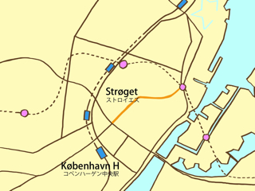

コペンハーゲン中心部にある大通りはストロイエズと呼ばれています．１９６２年にストロイエズは，コペンハーゲンで最初の歩行者専用道路となりました．ストロイエズは，コペンハーゲン市庁舎のある広場（Rådhuspladsen）から，コンゲンス・ニュトーウ（Kongens Nytorv）という広場まで続いています．途中，3つの大きな広場があります，ガメルトーヴ（Gammeltorv），ニュトーウ（Nytorv）そしてアマートーヴ（Amagertorv）です．
この歩行者専用の大通り，ストロイエズは，平日であればほとんど毎日，散策する旅行者やコペンハーゲン市民で賑わっています．
ストロイエズには，陶磁器で有名なロイヤル・コペンハーゲンのお店や銀製品で有名なギーオウ・イェンスン（Georg Jensen）などのお店が並びます．また，デンマークの老舗デパート・イロム（Illum）そしてスカンジナヴィア・デザインの家具や小物などを扱う，イロムス・ボーリフース（Illums Bolighus）などもあります．